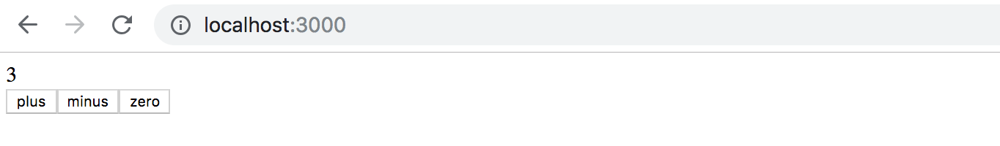
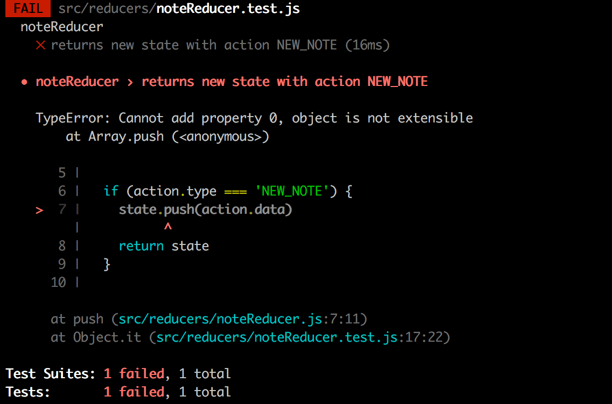

到目前为止，我们一直遵循React推荐的状态管理约定。我们把状态和处理状态的方法放到了应用的根组件。然后，状态和它的处理方法被用prop传递给其他组件。这在一定程度上是可行的，但当应用越来越大时，状态管理就变得很有挑战性。
Flux-architecture
Facebook开发了Flux-架构，使状态管理更容易。在Flux中，状态被完全从React组件中分离出来，进入它自己的存储。
存储器中的状态不是直接改变的，而是通过不同的动作改变的。
当一个动作改变了商店的状态时，视图会被重新渲染。

如果应用上的某些动作，例如按下一个按钮，导致需要改变状态，则用一个动作进行改变。
这将导致再次重新渲染视图。

Flux为应用的状态如何保存、在哪里保存以及如何修改提供了一个标准的方法。
Redux
Facebook有一个Flux的实现，但我们将使用Redux - 库。它的工作原理是一样的，但要简单一些。Facebook现在也使用Redux，而不是他们原来的Flux。
我们将再次通过实现一个计数器应用来了解Redux。

创建一个新的create-react-app-application并安装redux，命令如下
npm install redux
和Flux一样，在Redux中，状态也被存储在一个存储中。
应用的整个状态被存储在商店的一个JavaScript-object中。因为我们的应用只需要计数器的值，所以我们将直接把它保存到存储区。如果状态更复杂，状态中的不同事物将被保存为对象的独立字段。
存储器的状态是通过动作改变的。行动是对象，它至少有一个字段决定行动的类型。
例如，我们的应用需要以下动作。
{
type: 'INCREMENT'
}
如果行动中涉及到数据，可以根据需要声明其他字段。 然而，我们的计数应用非常简单，动作只需要类型字段就可以了。
动作对应用状态的影响是用一个reducer来定义的。在实践中，还原器是一个函数，它被赋予当前状态和一个动作作为参数。它返回一个新的状态。
现在让我们为我们的应用定义一个还原器。
const counterReducer = (state, action) => {
if (action.type === 'INCREMENT') {
return state + 1
} else if (action.type === 'DECREMENT') {
return state - 1
} else if (action.type === 'ZERO') {
return 0
}
return state
}
第一个参数是商店里的状态。还原器根据动作类型返回一个新状态。
让我们改变一下代码。习惯上，在还原器中使用switch -命令而不是ifs。
我们也为参数state定义一个默认值为0。现在，即使商店的状态还没有被引出，还原器也能工作。
const counterReducer = (state = 0, action) => {
switch (action.type) {
case 'INCREMENT':
return state + 1
case 'DECREMENT':
return state - 1
case 'ZERO':
return 0
default: // if none of the above matches, code comes here
return state
}
}
Reducer不应该从应用代码中直接调用。还原器只是作为创建存储的_createStore_函数的一个参数。
import { createStore } from 'redux'
const counterReducer = (state = 0, action) => {
// ...
}
const store = createStore(counterReducer)
存储器现在使用还原器来处理操作，这些操作被分派或"发送"到存储器的dispatch-方法。
store.dispatch({type: 'INCREMENT'})
你可以用getState方法找出商店的状态。
例如，下面的代码。
const store = createStore(counterReducer)
console.log(store.getState())
store.dispatch({type: 'INCREMENT'})
store.dispatch({type: 'INCREMENT'})
store.dispatch({type: 'INCREMENT'})
console.log(store.getState())
store.dispatch({type: 'ZERO'})
store.dispatch({type: 'DECREMENT'})
console.log(store.getState())
会在控制台中打印以下内容
0
3
-1
因为一开始商店的状态是0，经过三个INCREMENT动作后，状态是3。 最后，经过ZERO和DECREMENT动作，状态是-1。
存储器的第三个重要方法是subscribe，它被用来创建存储器在其状态改变时调用的回调函数。
例如，如果我们将添加以下函数到subscribe，商店的每一个变化将被打印到控制台。
store.subscribe(() => {
const storeNow = store.getState()
console.log(storeNow)
})
所以代码
const store = createStore(counterReducer)
store.subscribe(() => {
const storeNow = store.getState()
console.log(storeNow)
})
store.dispatch({ type: 'INCREMENT' })
store.dispatch({ type: 'INCREMENT' })
store.dispatch({ type: 'INCREMENT' })
store.dispatch({ type: 'ZERO' })
store.dispatch({ type: 'DECREMENT' })
将导致以下内容被打印出来
1
2
3
0
-1
我们的计数器应用的代码如下。所有的代码都写在同一个文件中，所以store对React代码来说是直接可用的。我们以后会了解到更好的结构React/Redux代码的方法。
import React from 'react'
import ReactDOM from 'react-dom/client'
import { createStore } from 'redux'
const counterReducer = (state = 0, action) => {
switch (action.type) {
case 'INCREMENT':
return state + 1
case 'DECREMENT':
return state - 1
case 'ZERO':
return 0
default:
return state
}
}
const store = createStore(counterReducer)
const App = () => {
return (
<div>
<div>
{store.getState()}
</div>
<button
onClick={e => store.dispatch({ type: 'INCREMENT' })}
>
plus
</button>
<button
onClick={e => store.dispatch({ type: 'DECREMENT' })}
>
minus
</button>
<button
onClick={e => store.dispatch({ type: 'ZERO' })}
>
zero
</button>
</div>
)
}
const renderApp = () => {
ReactDOM.createRoot(document.getElementById('root')).render(<App />)
}
renderApp()
store.subscribe(renderApp)
代码中有几个值得注意的地方。 App renders the value of the counter by asking it from the store with the method store.getState(). The actionhandlers of the buttons dispatch the right actions to the store.
当商店里的状态改变时，React不能自动重新渲染应用。因此，我们注册了一个函数_renderApp_，它渲染了整个应用，用_store.subscribe_方法来监听商店的变化。请注意，我们必须立即调用_renderApp_方法。没有这个调用，应用的第一次渲染就不会发生。
Redux-notes
我们的目的是修改我们的笔记应用，以使用Redux进行状态管理。然而，让我们先通过一个简化的笔记应用来介绍一些关键的概念。
我们应用的第一个版本是这样的
const noteReducer = (state = [], action) => {
if (action.type === 'NEW_NOTE') {
state.push(action.data)
return state
}
return state
}
const store = createStore(noteReducer)
store.dispatch({
type: 'NEW_NOTE',
data: {
content: 'the app state is in redux store',
important: true,
id: 1
}
})
store.dispatch({
type: 'NEW_NOTE',
data: {
content: 'state changes are made with actions',
important: false,
id: 2
}
})
const App = () => {
return(
<div>
<ul>
{store.getState().map(note=>
<li key={note.id}>
{note.content} <strong>{note.important ? 'important' : ''}</strong>
</li>
)}
</ul>
</div>
)
}
到目前为止，这个应用还没有添加新笔记的功能，尽管可以通过调度NEW_NOTE动作来实现。
现在行动有一个类型和一个字段data，它包含要添加的笔记。
{
type: 'NEW_NOTE',
data: {
content: 'state changes are made with actions',
important: false,
id: 2
}
}
Pure functions, immutable
减速器的初始版本非常简单。
const noteReducer = (state = [], action) => {
if (action.type === 'NEW_NOTE') {
state.push(action.data)
return state
}
return state
}
现在的状态是一个数组。NEW_NOTE-类型的动作导致一个新的笔记被添加到push方法的状态。
应用似乎在工作，但我们所声明的还原器是坏的。它打破了Redux减速器的基本假设，即减速器必须是纯函数。
纯函数是这样的，它们不会引起任何副作用，而且当用同样的参数调用时，它们必须总是返回同样的响应。
我们用_state.push(action.data)_方法给状态添加了一个新的注释，该方法改变了状态对象的状态。这是不允许的。这个问题可以通过使用concat方法轻松解决，该方法会创建一个新数组，其中包含旧数组的所有元素和新元素。
const noteReducer = (state = [], action) => {
if (action.type === 'NEW_NOTE') {
return state.concat(action.data)
}
return state
}
一个还原器的状态必须由immutable对象组成。如果状态有变化，旧的对象不会被改变，但它会被一个新的、改变了的对象所取代。这正是我们对新的还原器所做的：旧的数组被新的数组所取代。
让我们扩展我们的还原器，使其能够处理笔记重要性的变化。
{
type: 'TOGGLE_IMPORTANCE',
data: {
id: 2
}
}
由于我们还没有任何使用这个功能的代码，我们以"测试驱动"的方式来扩展减速器。
让我们先创建一个测试来处理NEW_NOTE动作。
为了使测试更容易，我们首先将减速器的代码移到它自己的模块中，即文件src/reducers/noteReducer.js。我们还将添加库deep-freeze，它可以用来确保减速器被正确地定义为一个不可变的函数。
让我们把这个库作为开发依赖项来安装
npm install --save-dev deep-freeze
我们在文件src/reducers/noteReducer.test.js中定义的测试，有以下内容。
import noteReducer from './noteReducer'
import deepFreeze from 'deep-freeze'
describe('noteReducer', () => {
test('returns new state with action NEW_NOTE', () => {
const state = []
const action = {
type: 'NEW_NOTE',
data: {
content: 'the app state is in redux store',
important: true,
id: 1
}
}
deepFreeze(state)
const newState = noteReducer(state, action)
expect(newState).toHaveLength(1)
expect(newState).toContainEqual(action.data)
})
})
deepFreeze(state) 命令确保了还原器不会改变作为参数给它的存储的状态。如果reducer使用_push_命令来操作状态，测试将不会通过

现在我们要为TOGGLE_IMPORTANCE动作创建一个测试。
test('returns new state with action TOGGLE_IMPORTANCE', () => {
const state = [
{
content: 'the app state is in redux store',
important: true,
id: 1
},
{
content: 'state changes are made with actions',
important: false,
id: 2
}]
const action = {
type: 'TOGGLE_IMPORTANCE',
data: {
id: 2
}
}
deepFreeze(state)
const newState = noteReducer(state, action)
expect(newState).toHaveLength(2)
expect(newState).toContainEqual(state[0])
expect(newState).toContainEqual({
content: 'state changes are made with actions',
important: true,
id: 2
})
})
所以下面的动作
{
type: 'TOGGLE_IMPORTANCE',
data: {
id: 2
}
}
必须改变id为2的笔记的重要性。
减速器的扩展如下
const noteReducer = (state = [], action) => {
switch(action.type) {
case 'NEW_NOTE':
return state.concat(action.data)
case 'TOGGLE_IMPORTANCE': {
const id = action.data.id
const noteToChange = state.find(n => n.id === id)
const changedNote = {
...noteToChange,
important: !noteToChange.important
}
return state.map(note =>
note.id !== id ? note : changedNote
)
}
default:
return state
}
}
我们用熟悉的第二章节的语法创建一个重要性已经改变的笔记的副本，并用一个包含所有没有改变的笔记和改变的笔记changedNote的副本的新状态取代该状态。
让我们回顾一下代码中的内容。首先，我们搜索一个特定的笔记对象，我们想改变它的重要性。
const noteToChange = state.find(n => n.id === id)
然后我们创建一个新的对象，它是原始笔记的拷贝，只是重要字段的值被改成了与原来相反的。
const changedNote = {
...noteToChange,
important: !noteToChange.important
}
然后一个新的状态被返回。我们通过从旧状态中提取所有的笔记来创建它，除了所需的笔记，我们用它的略微改动的副本来替换它。
state.map(note =>
note.id !== id ? note : changedNote
)
Array spread syntax
因为我们现在对还原器有很好的测试，我们可以安全地重构代码。
添加一个新的注释，用Arrays concat-function创建它返回的状态。让我们来看看我们如何通过使用JavaScript array spread -语法来实现同样的效果。
const noteReducer = (state = [], action) => {
switch(action.type) {
case 'NEW_NOTE':
return [...state, action.data]
case 'TOGGLE_IMPORTANCE':
// ...
default:
return state
}
}
传播-语法的工作原理如下。如果我们声明
const numbers = [1, 2, 3]
...numbers breaks the array up into individual elements, which can be placed in another array.
[...numbers, 4, 5]
结果是一个数组`[1, 2, 3, 4, 5]'。
如果我们将这个数组放置在另一个数组中，而不使用spread
[numbers, 4, 5]
结果会是[[1, 2, 3], 4, 5]。
当我们通过解构从一个数组中取出元素时，一个看起来类似的语法被用来收集其余的元素。
const numbers = [1, 2, 3, 4, 5, 6]
const [first, second, ...rest] = numbers
console.log(first) // prints 1
console.log(second) // prints 2
console.log(rest) // prints [3, 4, 5, 6]